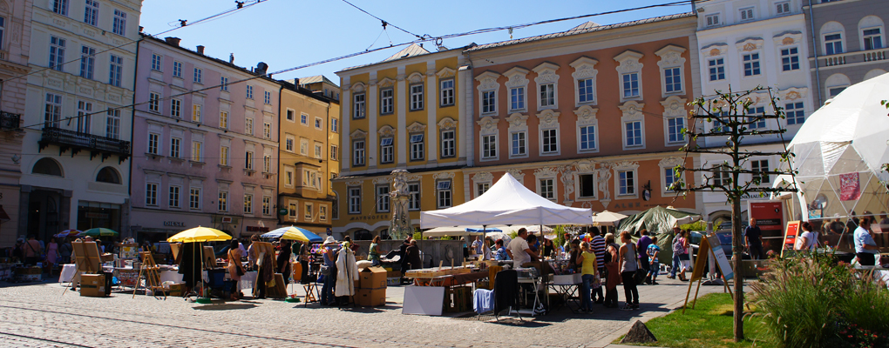
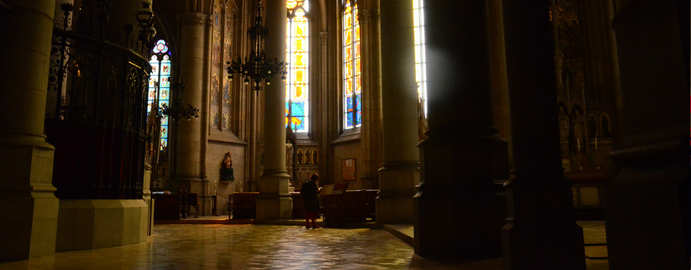
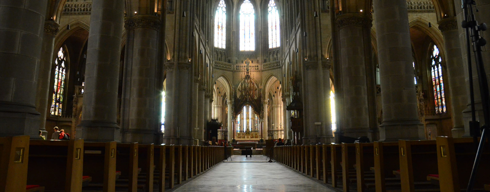
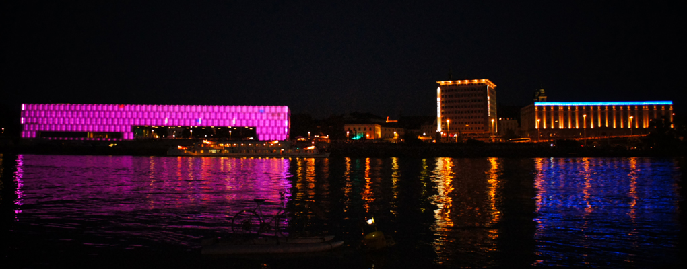

- 
- 

- 
- 


1. リンツ最大の教会、新大聖堂。ここでは、アルスエレクトロニカフェスティバルのプログラムの一部が開催されていました。 2. 壮麗な外観もさることながら、内部のステンドグラスも素晴らしかったです。色鮮やかに着色されたガラスと細かなリム、定期的に挟まれるシンメトリックなデザインが記憶に残ります。 3. 聖堂の一角で、0.75ユーロで買える蝋燭。訪れた人が一つずつ灯してゆきます。
1. 旧市街側からドナウ川に向かって立つと、小高い丘が見えます。写真は、その丘の上からみた景色。リンツの街並みとドナウ川を一望できます。 2. 丘の上にそびえ建つペストリンクベルク巡礼教会。サイズは比較的こぢんまりとしていますが、内部は煌びやかでした。 3. 丘と教会へは、ハウプト広場から出ているペストリンクベルク登山鉄道に乗って20分程。山道のためゆっくり運転です。

1. ドナウ川岸に建つ、Weber&Hofer設計の、ガラス張りの美術館。ガラスには「lentos kunstmuseum」の文字がひたすら羅列されています。コレクションはクリムト、ココシュカなどクラシックモダンの絵画が中心。 2. チケット売り場の真横にあるミュージアムショップ。品揃えはいまいちでした... 3. ドナウ川対岸からみた夜のレントス。夜はピンク色にライトアップされます。
1. 街の中心、ハウプト広場。300年程前に建てられた、白大理石製の三位一体の柱がシンボルです。広場を囲むバロック様式の建物には、オープンテラスのカフェやホテル、本屋などが入っています。 2. 土曜の朝にはマーケットが開かれ賑わっていました。 3. ハウプト広場から出ている黄色い「リンツ・シティ・エクスプレス」は、30分弱で街中の主な見どころを周ります。
1. リンツ発祥のお菓子、「リンツァートルテ」。こちらは1929年創業の、オリジナル・リンツァートルテを名乗るお店だそう。隣にカフェが併設されています。 2. 1カット2ユーロでした。重め食感、ざくざくでナッティー。寒い季節に合いそうです。 3. 「リンツァートルテ」以外のケーキも扱っています。この日は暑かったので、「リンツァートルテ」を美味しく頂いた後カフェを出てアイスを食べました。
1. ドナウ川に沿って細長く伸びる公園。整備されていて非常に綺麗です。朝昼晩問わず、ランナーとよくすれ違いました。犬もよく放し飼いにされています。リンツでは猫を一度も見かけませんでした。 2. (フェスティバル期間中は、)ブルックナーハウスやレントス美術館の無線がビョンビョン飛んでくるので、芝生の上で開発やインターネットを楽しむことができます。 3. 夕暮れ時のドナウ川でカヌーを黙々と漕ぐおじさん。